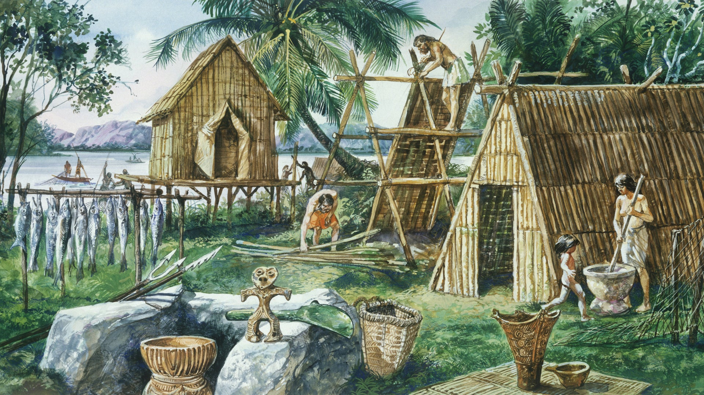
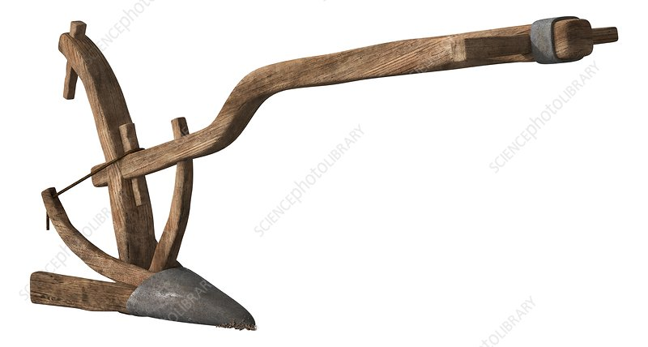
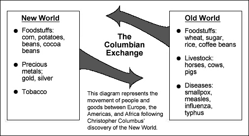

| Positive Impacts | Negative Impacts | What we can do? |
|---|---|---|
| Plant domestication | Deforestation | Reforestation |
| Better farming practices | Soil depletion | Implement crop rotation to enhance soil health |
| Establishment of permanent settlements | Destruction of Natural Habitat | Establish protected areas and implement restoration projects |
| Innovation of the Bronze Age and Iron Age | Intensified conflicts and warfare among human societies | Strengthen diplomatic efforts to prevent escalation of conflicts |
| Trade and Conquest | Destruction of Indigenous Cultures and Societies | Advocate for the recognition and protection of indigenous rights |
Agricultural Revolution
The First Agricultural Revolution (Neolithic Revolution) took place around 10,000 BC, when humans first took up farming and most parts of the world began to practice agriculture.
Climate change, according to scientists, played a pivotal role in sparking the Neolithic Revolution, transforming human history.
Events
The transformation from a society of hunters and gatherers to agricultural communities was displayed by the Neolithic Revolution which began in the Middle-East.
To cultivate crops more efficiently and manage water resources better, various irrigation systems and plow have been developed.
From 3000 BCE to 1500 CE, agricultural techniques spread across different regions, leading to increased food production and large population growth.
In the 15th to the 16th century, the Columbian Exchange facilitated the global transfer of plants, animals, and diseases between the Old World and the New World.
